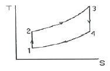
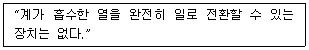
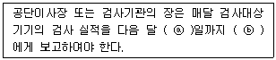
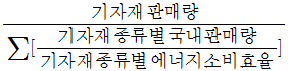
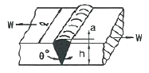
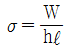
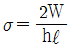
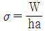
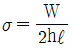

에너지관리기사 (2019-04-27 기출문제)
1과목: 연소공학
1. 연소 설비에서 배출되는 다음의 공해물질 중 산성비의 원인이 되며 가성소다나 석회 등을 통해 제거할 수 있는 것은?
- SOx
- NOx
- CO
- 매연
(정답률: 63%)

2. CmHn 1Nm3를 완전 연소시켰을 때 생기는 H2O의 양(Nm3)은? (단, 분자식의 첨자 m, n과 답항의 n 은 상수이다.)
- n/4
- n/2
- n
- 2n
(정답률: 72%)
3. 다음 중 매연 생성에 가장 큰 영향을 미치는 것은?
- 연소속도
- 발열량
- 공기비
- 착화온도
(정답률: 79%)
4. 액체의 인화점에 영향을 미치는 요인으로 가장 거리가 먼 것은?
- 온도
- 압력
- 발화지연시간
- 용액의 농도
(정답률: 66%)
5. 탄소 1kg을 완전 연소시키는 데 필요한 공기량(Nm3)은? (단, 공기 중의 산소와 질소의 체적 함유 비를 각각 21%와 79%로 하며 공기 1 kmol의 체적은 22.4 m3 이다.)
- 6.75
- 7.23
- 8.89
- 9.97
(정답률: 68%)
6. 여과 집진장치의 여과재 중 내산성, 내알칼리성 모두 좋은 성질을 갖는 것은?
- 테트론
- 사란
- 비닐론
- 글라스
(정답률: 72%)
7. 고부하의 연소설비에서 연료의 점화나 화염 안정화를 도모하고자 할 때 사용할 수 있는 장치로서 가장 적절하지 않은 것은?
- 분젠 버너
- 파일럿 버너
- 플라즈마 버너
- 스파크 플러그
(정답률: 54%)
8. 연료 중에 회분이 많을 경우 연소에 미치는 영향으로 옳은 것은?
- 발열량이 증가한다.
- 연소상태가 고르게 된다.
- 클링커의 발생으로 통풍을 방해한다.
- 완전연소되어 잔류물을 남기지 않는다.
(정답률: 79%)
9. 과잉 공기가 너무 많을 때 발생하는 현상으로 옳은 것은?
- 연소 온도가 높아진다.
- 보일러 효율이 높아진다.
- 이산화탄소 비율이 많아진다.
- 배기가스의 열손실이 많아진다.
(정답률: 70%)
10. 연소 배기가스량의 계산식(Nm3/kg)으로 틀린 것은? (단, 습연소가스량 V, 건연소가스량 V′, 공기비 m, 이론공기량 A이고, H, O, N, C, S는 원소, W는 수분이다.)
- V = mA + 5.4H + 0.70O + 0.8N + 1.25W
- V = (m – 0.21)A + 1.87C + 11.2H + 0.7S + 0.8N + 1.25W
- V′ = mA – 5.6H – 0.7O + 0.8N
- V′ = (m – 0.21)A + 1.87C + 0.7S + 0.8N
(정답률: 41%)
11. 탄소 87%, 수소 10%, 황 3%의 중유가 있다. 이 때 중유의 탄산가스최대량(CO2)max는 약 몇 % 인가?
- 10.23
- 16.58
- 21.35
- 25.83
(정답률: 43%)
12. 다음 중 고체연료의 공업분석에서 계산만으로 산출되는 것은?
- 회분
- 수분
- 휘발분
- 고정탄소
(정답률: 75%)
13. 어느 용기에서 압력(P)과 체적(V)의 관계가 P = (50V + 10) × 102 kPa 과 같을 때 체적이 2m3에서 4m3 로 변하는 경우 일량은 몇 MJ 인가? (단, 체적의 단위는 m3 이다.)
- 32
- 34
- 36
- 38
(정답률: 45%)
14. 다음 중 폭발의 원인이 나머지 셋과 크게 다른 것은?
- 분진 폭발
- 분해 폭발
- 산화 폭발
- 증기 폭발
(정답률: 66%)
15. 연소 생성물(CO2, N2) 등의 농도가 높아지면 연소속도에 미치는 영향은?
- 연소속도가 빨라진다.
- 연소속도가 저하된다.
- 연소속도가 변화없다.
- 처음에는 저하되나, 나중에는 빨라진다.
(정답률: 72%)
16. 열정산을 할 때 입열 항에 해당하지 않는 것은?
- 연료의 연소열
- 연료의 현열
- 공기의 현열
- 발생 증기열
(정답률: 61%)
17. 보일러의 급수 및 발생증기의 엔탈피를 각각 150, 670 kcal/kg 이라고 할 때 20000 kg/h 의 증기를 얻으려면 공급열량은 약 몇 kcal/h 인가?
- 9.6 × 106
- 10.4 × 106
- 11.7 × 106
- 12.2 × 106
(정답률: 61%)
18. 1Nm3의 메탄가스를 공기를 사용하여 연소시킬 때 이론 연소온도는 약 몇 ℃ 인가? (단, 대기 온도는 15℃이고, 메탄가스의 고발열량은 39767 kJ/Nm3 이고, 물의 증발잠열은 2017.7 kJ/Nm3 이고, 연소가스의 평균정압비열은 1.423 kJ/Nm3℃ 이다.)
- 2387
- 2402
- 2417
- 2432
(정답률: 41%)
19. 다음 기체연료 중 고발열량(kcal/Sm3)이 가장 큰 것은?
- 고로가스
- 수성가스
- 도시가스
- 액화석유가스
(정답률: 73%)
20. 도시가스의 호환성을 판단하는데 사용되는 지수는?
- 웨베지수(Webbe Index)
- 듀롱지수(Dulong Index)
- 릴리지수(Lilly Index)
- 제이도비흐지수(Zeldovich Index)
(정답률: 78%)
2과목: 열역학
21. 오토(Otto)사이클은 온도-엔트로피(T-S)선도로 표시하면 그림과 같다. 작동유체가 열을 방출하는 과정은?

- 1 → 2 과정
- 2 → 3 과정
- 3 → 4 과정
- 4 → 1 과정
(정답률: 54%)
22. 다음 과정 중 가역적인 과정이 아닌 것은?
- 과정은 어느 방향으로나 진행될 수 있다.
- 마찰을 수반하지 않아 마찰로 인한 손실이 없다.
- 변화 경로의 어느 점에서도 역학적, 열적, 화학적 등의 모든 평형을 유지하면서 주위에 어떠한 영향도 남기지 않는다.
- 과정은 이를 조절하는 값을 무한소만큼씩 변화시켜도 역행할 수는 없다.
(정답률: 56%)
23. 증기 압축 냉동사이클에서 압축기 입구의 엔탈피는 223 kJ/kg, 응축기 입구의 엔탈피는 268 kJ/kg, 증발기 입구의 엔탈피는 91 kJ/kg인 냉동기의 성적계수는 약 얼마인가?
- 1.8
- 2.3
- 2.9
- 3.5
(정답률: 51%)
24. 압력 1MPa, 온도 210℃ 인 증기는 어떤 상태의 증기인가? (단, 1MPa 에서의 포화온도는 179℃이다.)
- 과열증기
- 포화증기
- 건포화증기
- 습증기
(정답률: 69%)
25. 열역학 제1법칙은 기본적으로 무엇에 관한 내용인가?
- 열의 전달
- 온도의 정의
- 엔트로피의 정의
- 에너지의 보존
(정답률: 79%)
26. 성능계수(COP)가 2.5인 냉동기가 있다. 15냉동톤(refrigeration ton)의 냉동 용량을 얻기 위해서 냉동기에 공급해야할 동력(kW)은? (단, 1냉동톤은 3.861 kW 이다.)
- 20.5
- 23.2
- 27.5
- 29.7
(정답률: 67%)
27. 냉동기의 냉매로서 갖추어야 할 요구조건으로 옳지 않은 것은?
- 비체적이 커야 한다.
- 불활성이고 안정적이어야 한다.
- 증발온도에서 높은 잠열을 가져야 한다.
- 액체의 표면장력이 작아야 한다.
(정답률: 68%)
28. 디젤 사이클로 작동되는 디젤 기관의 각 행정의 순서를 옳게 나타낸 것은?
- 단열압축 → 정적가열 → 단열팽창 → 정적방열
- 단열압축 → 정압가열 → 단열팽창 → 정압방열
- 등온압축 → 정적가열 → 등온팽창 → 정적방열
- 단열압축 → 정압가열 → 단열팽창 → 정적방열
(정답률: 62%)
29. 수증기를 사용하는 기본 랭킨사이클에서 응축기 압력을 낮출 경우 발생하는 현상에 대한 설명으로 옳지 않은 것은?
- 열이 방출되는 온도가 낮아진다.
- 열효율이 높아진다.
- 터빈 날개의 부식 발생 우려가 커진다.
- 터빈 출구에서 건도가 높아진다.
(정답률: 46%)
30. 압력 100kPa, 체적 3m3인 이상기체가 등엔트로피 과정을 통하여 체적이 2m3으로 변하였다. 이 과정 중에 기체가 한 일은 약 몇 kJ 인가? (단, 기체상수는 0.488 kJ/(kg·K), 정적비열은 1.642 kJ/(kg·K) 이다.)
- -113
- -129
- -137
- -143
(정답률: 50%)
31. 다음과 관계있는 법칙은?

- 열역학 제3법칙
- 열역학 제2법칙
- 열역학 제1법칙
- 열역학 제0법칙
(정답률: 73%)
32. 1.5 MPa, 250℃의 공기 5kg이 폴리트로픽 지수 1.3인 폴리트로픽 변화를 통해 팽창비가 5가 될 때까지 팽창하였다. 이 때 내부에너지의 변화는 약 몇 kJ 인가? (단, 공기의 정적비열은 0.72 kJ/(kg·K) 이다.)
- -1002
- -721
- -144
- -72
(정답률: 44%)
33. 다음 사이클(cycle) 중 물과 수증기를 오가면서 동력을 발생시키는 플랜트에 적용하기 적합한 것은?
- 랭킨 사이클
- 오토 사이클
- 디젤 사이클
- 브레이턴 사이클
(정답률: 70%)
34. 카르노 사이클(Carnot cycle)로 작동하는 가역 기관에서 650℃의 고열원으로부터 18830 kJ/min 의 에너지를 공급받아 일을 하고 65℃의 저열원에 방열시킬 때 방열량은 약 몇 kW 인가?
- 1.92
- 2.61
- 115.0
- 156.5
(정답률: 33%)
35. 80℃의 물 100kg과 50℃의 물 50kg을 혼합한 물의 온도는 약 몇 ℃ 인가? (단, 물의 비열은 일정하다.)
- 70
- 65
- 60
- 55
(정답률: 54%)
36. 초기온도가 20℃인 암모니아(NH3) 3kg을 정적과정으로 가열시킬 때, 엔트로피가 1.255 kJ/K 만큼 증가하는 경우 가열량은 약 몇 kJ 인가? (단, 암모니아 정적비열은 1.56 kJ/(kg·K) 이다.)
- 62.2
- 101
- 238
- 422
(정답률: 22%)
37. 반지름이 0.55cm 이고, 길이가 1.94 cm인 원통형 실린더 안에 어떤 기체가 들어 있다. 이 기체의 질량이 8g 이라면, 실린더 안에 들어있는 기체의 밀도는 약 몇 g/cm3 인가?
- 2.9
- 3.7
- 4.3
- 5.1
(정답률: 44%)
38. 동일한 압력에서 100℃, 3kg의 수증기와 0℃ 3kg의 물의 엔탈피 차이는 약 몇 kJ 인가? (단, 물의 평균정압비열은 4.184 kJ/(kg·K) 이고, 100℃에서 증발잠열은 2250 kJ/kg 이다.)
- 80⑤
- 2668
- 1918
- 638
(정답률: 41%)
39. 밀도가 800 kg/m3 인 액체와 비체적이 0.0015 m3/kg 인 액체를 질량비 1 : 1로 잘 섞으면 혼합액의 밀도는 약 몇 kg/m3 인가?
- 721
- 727
- 733
- 739
(정답률: 53%)
40. 이상적인 가역 단열변화에서 엔트로피는 어떻게 되는가?
- 감소한다.
- 증가한다.
- 변하지 않는다.
- 감소하다 증가한다.
(정답률: 59%)
3과목: 계측방법
41. 비접촉식 온도측정 방법 중 가장 정확한 측정을 할 수 있으나 연속측정이나 자동제어에 응용할 수 없는 것은?
- 광고온계
- 방사온도계
- 압력식 온도계
- 열전대 온도계
(정답률: 67%)
42. 세라믹식 O2계의 특징으로 틀린 것은?
- 연속측정이 가능하며, 측정범위가 넓다.
- 측정부의 온도유지를 위해 온도 조절용 전기로가 필요하다.
- 측정가스의 유량이나 설치장소 주위의 온도 변화에 의한 영향이 적다.
- 저농도 가연성가스의 분석에 적합하고 대기오염관리 등에서 사용된다.
(정답률: 45%)
43. 자동제어시스템의 입력신호에 따른 출력 변화의 설명으로 과도응답에 해당되는 것은?
- 1차보다 응답속도가 느린 지연요소
- 정상상태에 있는 계에 격한 변화의 입력을 가했을 때 생기는 출력의 변화
- 입력변화에 따른 출력에 지연이 생겨 시간이 경과 후 어떤 일정한 값에 도달하는 요소
- 정상상태에 있는 요소의 입력을 스텝형태로 변화할 때 출력이 새로운 값에 도달 스템입력에 의한 출력의 변화 상태
(정답률: 45%)
44. 공기압식 조절계에 대한 설명으로 틀린 것은?
- 신호로 사용되는 공기압은 약 0.2 ~ 1.0 kg/cm2 이다.
- 관로저항으로 전송지연이 생길 수 있다.
- 실용상 2000 m 이내에서는 전송지연이 없다.
- 신호 공기압은 충분히 제습, 제진한 것이 요구된다.
(정답률: 71%)
45. 다음 중 융해열을 측정할 수 있는 열량계는?
- 금속 열량계
- 융커스형 열량계
- 시차주사 열량계
- 디페닐에테르 열량계
(정답률: 43%)
46. 화씨(°F)와 섭씨(℃)의 눈금이 같게 되는 온도는 몇 ℃ 인가?
- 40
- 20
- -20
- -40
(정답률: 74%)
47. 측온저항체의 구비조건으로 틀린 것은?
- 호환성이 있을 것
- 저항의 온도계수가 작을 것
- 온도와 저항의 관계가 연속적일 것
- 저항 값이 온도 이외의 조건에서 변하지 않을 것
(정답률: 67%)
48. 다음 중 화학적 가스 분석계에 해당하는 것은?
- 고체 흡수제를 이용하는 것
- 가스의 밀도와 점도를 이용하는 것
- 흡수용액의 전기전도도를 이용하는 것
- 가스의 자기적 성질을 이용하는 것
(정답률: 56%)
49. 다음 중 차압식 유량계가 아닌 것은?
- 플로우 노즐
- 로터미터
- 오리피스미터
- 벤투리미터
(정답률: 75%)
50. 용적식 유량계에 대한 설명으로 틀린 것은?
- 측정유체의 맥동에 의한 영향이 적다.
- 점도가 높은 유량의 측정은 곤란하다.
- 고형물의 혼입을 막기 위해 입구 측에 여과기가 필요하다.
- 종류에는 오벌식, 루트식, 로터리피스톤식 등이 있다.
(정답률: 61%)
51. 전자유량계의 특징이 아닌 것은?
- 유속검출에 지연시간이 없다.
- 유체의 밀도와 점성의 영향을 받는다.
- 유로에 장애물이 없고 압력손실, 이물질 부착의 염려가 없다.
- 다른 물질이 섞여있거나 기포가 있는 액체도 측정이 가능하다.
(정답률: 60%)
52. 다음 중 파스칼의 원리를 가장 바르게 설명한 것은?
- 밀폐 용기 내의 액체에 압력을 가하면 압력은 모든 부분에 동일하게 전달된다.
- 밀폐 용기 내의 액체에 압력을 가하면 압력은 가한 점에만 전달된다.
- 밀폐 용기 내의 액체에 압력을 가하면 압력은 가한 반대편으로만 전달된다.
- 밀폐 용기 내의 액체에 압력을 가하면 압력은 가한 점으로부터 일정 간격을 두고 차등적으로 전달된다.
(정답률: 74%)
53. 다음 중 자동제어에서 미분동작을 설명한 것으로 가장 적절한 것은?
- 조절계의 출력 변화가 편차에 비례하는 동작
- 조절계의 출력 변화의 크기와 지속시간에 비례하는 동작
- 조절계의 출력 변화가 편차의 변화속도에 비례하는 동작
- 조작량이 어떤 동작 신호의 값을 경계로 하여 완전히 전개 또는 전폐되는 동작
(정답률: 53%)
54. 탄성 압력계에 속하지 않는 것은?
- 부자식 압력계
- 다이아프램 압력계
- 벨로우즈식 압력계
- 부르동관 압력계
(정답률: 65%)
55. 화염검출방식으로 가장 거리가 먼 것은?
- 화염의 열을 이용
- 화염의 빛을 이용
- 화염의 색을 이용
- 화염의 전기전도성을 이용
(정답률: 64%)
56. 보일러의 계기에 나타난 압력이 6kg/cm2이다. 이를 절대압력으로 표시할 때 가장 가까운 값을 몇 kg/cm2 인가?
- 3
- 5
- 6
- 7
(정답률: 64%)
57. 가스온도를 열전대 온도계를 써서 측정할 때 주의해야 할 사항으로 틀린 것은?
- 열전대를 측정하고자 하는 곳에 정확히 삽입하여 삽입된 구멍에 냉기가 들어가지 않게 한다.
- 주위의 고온체로부터의 복사열의 영향으로 인한 오차가 생기지 않도록 해야 한다.
- 단자의 +, -를 보상도선의 -, +와 일치하도록 연결하여 감온부의 열팽창에 의한 오차가 발생하지 않도록 한다.
- 보호관의 선택에 주의한다.
(정답률: 76%)
58. 일반적으로 오르자트 가스분석기로 어떤 가스를 분석할 수 있는가?
- CO2, SO2, CO
- CO2, SO2, O2
- SO2, CO, O2
- CO2, O2, CO
(정답률: 68%)
59. 색온도계의 특징이 아닌 것은?
- 방사율의 영향이 크다.
- 광흡수에 영향이 적다.
- 응답이 빠르다.
- 구조가 복잡하여 주위로부터 빛 반사의 영향을 받는다.
(정답률: 43%)
60. 국제단위계(SI)를 분류한 것으로 옳지 않은 것은?
- 기본단위
- 유도단위
- 보조단위
- 응용단위
(정답률: 68%)
4과목: 열설비재료 및 관계법규
61. 에너지법에 따른 지역에너지계획에 포함되어야 할 사항이 아닌 것은?
- 해당 지역에 대한 에너지 수급의 추이와 전망에 관한 사항
- 해당 지역에 대한 에너지의 안정적 공급을 위한 대책에 관한 사항
- 해당 지역에 대한 에너지 효율적 사용을 위한 기술개발에 관한 사항
- 해당 지역에 대한 미활용 에너지원의 개발·사용을 위한 대책에 관한 사항
(정답률: 38%)
62. 노통연관보일러에서 파형노통에 대한 설명으로 틀린 것은?
- 강도가 크다.
- 제작비가 비싸다.
- 스케일의 생성이 쉽다.
- 열의 신축에 의한 탄력성이 나쁘다.
(정답률: 63%)
63. 제강 평로에서 채용되고 있는 배열회수방법으로서 배기가스의 현열을 흡수하여 공기나 연료가스 예열에 이용될 수 있도록 한 장치는?
- 축열실
- 환열기
- 폐열 보일러
- 판형 열교환기
(정답률: 68%)
64. 볼밸브의 특징에 대한 설명으로 틀린 것은?
- 유로가 배관과 같은 형상으로 유체의 저항이 적다.
- 밸브의 개폐가 쉽고 조작이 간편하여 자동조작밸브로 활용된다.
- 이음쇠 구조가 없기 때문에 설치공간이 작아도 되며 보수가 쉽다.
- 밸브대가 90°회전하므로 패킹과의 원주방향 움직임이 크기 때문에 기밀성이 약하다.
(정답률: 70%)
65. 에너지용 합리화법에 따라 에너지 사용의 제한 또는 금지에 관한 조정·명령, 그 밖에 필요한 조치를 위반한 에너지사용자에 대한 과태료 부과 기준은?
- 300만원 이하
- 100만원 이하
- 50만원 이하
- 10만원 이하
(정답률: 74%)
66. 내화물에 대한 설명으로 틀린 것은?
- 샤모트질 벽돌은 카올린을 미리 SK10~14 정도로 1차 소성하여 탈수 후 분쇄한 것으로서 고온에서 광물상을 안정화한 것이다.
- 제겔콘 22번의 내화도는 1530℃ 이며, 내화물은 제겔콘 26번 이상의 내화도를 가진 벽돌을 말한다.
- 중성질 내화물은 고알루미나질, 탄소질, 탄화규소질, 크롬질 내화물이 있다.
- 용융내화물은 원료를 일단 용융상태로 한 다음에 주조한 내화물이다.
(정답률: 65%)
67. 에너지이용 합리화법에 따라 온수발생 및 열매체를 가열하는 보일러의 용량은 몇 kW를 1t/h로 구분하는가?
- 477.8
- 581.5
- 697.8
- 789.5
(정답률: 42%)
68. 에너지이용 합리화법에 따라 소형 온수보일러의 적용범위에 대한 설명으로 옳은 것은? (단, 구멍탄용 온수보일러·축열식 전기보일러 및 가스 사용량이 17kg/h 이하인 가스용 온수보일러는 제외한다.)
- 전열면적이 10m2 이하이며, 최고사용압력이 0.35MPa 이하의 온수를 발생하는 보일러
- 전열면적이 14m2 이하이며, 최고사용압력이 0.35MPa 이하의 온수를 발생하는 보일러
- 전열면적이 10m2 이하이며, 최고사용압력이 0.45MPa 이하의 온수를 발생하는 보일러
- 전열면적이 14m2 이하이며, 최고사용압력이 0.45MPa 이하의 온수를 발생하는 보일러
(정답률: 43%)
69. 소성이 균일하고 소성시간이 짧고 일반적으로 열효율이 좋으며 온도조절의 자동화가 쉬운 특징의 연속식 가마는?
- 터널 가마
- 도염식 가마
- 승염식 가마
- 도염식 둥근가마
(정답률: 73%)
70. 보온재의 열전도율이 작아지는 조건으로 틀린 것은?
- 재료의 두께가 두꺼워야 한다.
- 재료의 온도가 낮아야 한다.
- 재료의 밀도가 높아야 한다.
- 재료내 기공이 작고 기공률이 커야 한다.
(정답률: 62%)
71. 에너지이용 합리화법에 따라 효율관리기자재의 제조업자는 효율관리시험기관으로부터 측정결과를 통보받은 날부터 며칠 이내에 그 측정결과를 한국에너지공단에 신고하여야 하는가?
- 15일
- 30일
- 60일
- 90일
(정답률: 57%)
72. 에너지이용 합리화법에 따라 검사대상기기 관리대행기관으로 지정(변경지정) 받으려는 자가 첨부하여 제출해야 하는 서류가 아닌 것은?
- 장비명세서
- 기술인력명세서
- 변경사항을 증명할 수 있는 서류(변경지정의 경우만 해당)
- 향후 3년 간의 안전관리대행 사업계획서
(정답률: 65%)
73. 내화물의 구비조건으로 틀린 것은?
- 사용온도에서 연화, 변형되지 않을 것
- 상온 및 사용온도에서 압축강도가 클 것
- 열에 의한 팽창 수축이 클 것
- 내마모성 및 내침식성을 가질 것
(정답률: 75%)
74. 에너지이용 합리화법을 따른 양벌규정 사항에 해당되지 않는 것은?
- 에너지 저장시설의 보유 또는 저장의무의 부과 시 정당한 이유 없이 이를 거부하거나 이행하지 아니한 자
- 검사대상기기의 검사를 받지 아니한 자
- 검사대상기기관리자를 선임하지 아니한 자
- 공무원이 효율관리기자재 제조업자 사무소의 서류를 검사할 때 검사를 방해한 자
(정답률: 71%)
75. 다음 중 MgO-SiO2 계 내화물은?
- 마그네시아질 내화물
- 돌로마이트질 내화물
- 마그네시아-크롬질 내화물
- 포스테라이트질 내화물
(정답률: 62%)
76. 다음은 에너지이용 합리화법에서의 보고 및 검사에 관한 내용이다. ⓐ, ⓑ에 들어갈 단어를 나열한 것으로 옳은 것은?

- ⓐ : 5, ⓑ : 시·도지사
- ⓐ : 10, ⓑ : 시·도지사
- ⓐ : 5, ⓑ : 산업통상자원부장관
- ⓐ : 10, ⓑ : 산업통상자원부장관
(정답률: 57%)
77. 실리카(silica) 전이특성에 대한 설명으로 옳은 것은?
- 규석(quartz)은 상온에서 가장 안정된 광물이며 상압에서 573℃ 이하 온도에서 안정된 형이다.
- 실리카(silica)의 결정형은 규석(quartz), 트리디마이트(tridymaite), 크리스토발라이트(cristobalite), 카올린(kaoline)의 4가지 주형으로 구성된다.
- 결정형이 바뀌는 것을 전이라고 하며 전이속도를 빠르게 작용토록 하는 성분을 광화제라 한다.
- 크리스토발라이트(cristobalite)에서 용융실리카(fused silica)로 전이에 따른 부피변화 시 20%가 수축한다.
(정답률: 65%)
78. 다음 중 에너지이용 합리화법에 따라 산업통상자원부장관 또는 시·도지사가 한국에너지공단이사장에게 위탁한 업무가 아닌 것은?
- 에너지사용계획의 검토
- 에너지절약전문기업의 등록
- 냉난방온도의 유지·관리 여부에 대한 점검 및 실태 파악
- 에너지이용 합리화 기본계획의 수립
(정답률: 42%)
79. 소성내화물의 제조공정으로 가장 적절한 것은?
- 분쇄 → 혼련 → 건조 → 성형 → 소성
- 분쇄 → 혼련 → 성형 → 건조 → 소성
- 분쇄 → 건조 → 혼련 → 성형 → 소성
- 분쇄 → 건조 → 성형 → 소성 → 혼련
(정답률: 67%)
80. 에너지이용 합리화법에 따라 평균에너지 소비효율의 산정방법에 대한 설명으로 틀린 것은?
- 기자재의 종류별 에너지소비효율의 산정방법은 산업통상자원부장관이 정하여 고시한다.
- 평균에너지소비효율은

이다. - 평균에너지소비효율의 개선기간은 개선명령을 받은 날부터 다음해 1월 31일까지로 한다.
- 평균에너지소비효율의 개선명령을 받은 자는 개선명령을 받을 날부터 60일 이내에 개선명령 이행계획을 수립하여 제출하여야 한다.
(정답률: 44%)
5과목: 열설비설계
81. 다음 그림과 같은 V형 용접이음의 인장응력(σ)을 구하는 식은?





(정답률: 66%)
82. 표면응축기의 외측에 증기를 보내며 관속에 물이 흐른다. 사용하는 강관의 내경이 30mm, 두께가 2mm이고 증기의 전열계수는 6000 kcal/m2·h·℃, 물의 전열계수는 2500 kcal/m2·h·℃ 이다. 강관의 열전도도가 35 kcal/m·h·℃ 일 때 총괄전열계수(kcal/m2·h·℃)는?
- 16
- 160
- 1603
- 16031
(정답률: 53%)
83. 노 앞과 연도 끝에 통풍 팬을 설치하여 노 내의 압력을 임의로 조절할 수 있는 방식은?
- 자연통풍식
- 압입통풍식
- 유인통풍식
- 평형통풍식
(정답률: 51%)
84. 보일러 전열면에서 연소가스가 1000℃로 유입하여 500℃로 나가며 보일러수의 온도는 210℃로 일정하다. 열관류율이 150 kcal/m2·h·℃ 일 때, 단위 면적당 열교환량(kcal/m2·h)은? (단, 대수평균온도차를 활용한다.)
- 21118
- 46812
- 67135
- 74839
(정답률: 28%)
85. 물의 탁도에 대한 설명으로 옳은 것은?
- 카올린 1g이 증류수 1L속에 들어 있을 때의 색과 같은 색을 가지는 물을 탁도 1도의 물이라 한다.
- 카올린 1mg이 증류수 1L속에 들어 있을 때의 색과 같은 색을 가지는 물을 탁도 1도의 물이라 한다.
- 탄산칼슘 1g이 증류수 1L속에 들어 있을 때의 색과 같은 색을 가지는 물을 탁도 1도의 물이라 한다.
- 탄산칼슘 1mg이 증류수 1L속에 들어 있을 때의 색과 같은 색을 가지는 물을 탁도 1도의 물이라 한다.
(정답률: 74%)
86. 보일러의 형식에 따른 종류의 연결로 틀린 것은?
- 노통식 원통보일러 – 코르니시 보일러
- 노통연관식 원통보일러 – 라몽트 보일러
- 자연순환식 수관보일러 – 다쿠마 보일러
- 관류보일러 – 슐처 보일러
(정답률: 54%)
87. 라미네이션의 재료가 외부로부터 강하게 열을 받아 소손되어 부풀어 오르는 현상을 무엇이라고 하는가?
- 크랙
- 압궤
- 블리스터
- 만곡
(정답률: 62%)
88. 맞대기 용접은 용접방법에 따라서 그루브를 만들어야 한다. 판의 두께가 50mm 이상인 경우에 적합한 그루브의 형상은? (단, 자동용접은 제외한다.)
- V형
- H형
- R형
- A형
(정답률: 75%)
89. 직경 200mm 철관을 이용하여 매분 1500L의 물을 흘려보낼 때 철관 내의 유속(m/s)은?
- 0.59
- 0.79
- 0.99
- 1.19
(정답률: 54%)
90. 다음 중 보일러수를 pH 10.5 ~ 11.5 의 약알칼리로 유지하는 주된 이유는?
- 첨가된 염산이 강재를 보호하기 때문에
- 보일러의 부식 및 스케일 부착을 방지하기 위하여
- 과잉 알칼리성이 더 좋으나 약품이 많이 소요되므로 원가를 절약하기 위하여
- 표면에 딱딱한 스케일이 생성되어 부식을 방지하기 위하여
(정답률: 77%)
91. 다음 급수펌프 종류 중 회전식 펌프는?
- 위싱턴펌프
- 피스톤펌프
- 플런저펌프
- 터빈펌프
(정답률: 70%)
92. 다음 보일러 부속장치와 연소가스의 접촉과정을 나타낸 것으로 가장 적합한 것은?
- 과열기 → 공기예열기 → 절탄기
- 절탄기 → 공기예열기 → 과열기
- 과열기 → 절탄기 → 공기예열기
- 공기예열기 → 절탄기 → 과열기
(정답률: 64%)
93. 최고사용압력이 3MPa 이하인 수관보일러의 급수 수질에 대한 기준으로 옳은 것은?
- pH(25℃) : 8.0 ~ 9.5, 경도 : 0 mgCaCo3/L, 용존산소 : 0.1 mgO/L 이하
- pH(25℃) : 10.5 ~ 11.0, 경도 : 2 mgCaCo3/L, 용존산소 : 0.1 mgO/L 이하
- pH(25℃) : 8.5 ~ 9.6, 경도 : 0 mgCaCo3/L, 용존산소 : 0.007 mgO/L 이하
- pH(25℃) : 8.5 ~ 9.6, 경도 : 2 mgCaCo3/L, 용존산소 : 1 mgO/L 이하
(정답률: 40%)
94. 내경 800mm이고, 최고사용압력이 12kg/cm2 인 보일러의 동체를 설계하고자 한다. 세로이음에서 동체판의 두께(mm)는 얼마이어야 하는가? (단, 강판의 인장강도는 35kg/mm2, 안전계수는 5, 이음효율은 85%, 부식여유는 1mm로 한다.)
- 7
- 8
- 9
- 10
(정답률: 34%)
95. 보일러수에 녹아있는 기체를 제거하는 탈기기가 제거하는 대표적인 용존 가스는?
- O2
- H2SO4
- H2S
- SO2
(정답률: 70%)
96. 부식 중 점식에 대한 설명으로 틀린 것은?
- 전기화학적으로 일어나는 부식이다.
- 국부부식으로서 그 진행상태가 느리다.
- 보호피막이 파괴되었거나 고열을 받은 수열면 부분에 발생되기 쉽다.
- 수중 용존산소를 제거하면 점식 발생을 방지할 수 있다.
(정답률: 71%)
97. 육용강제 보일러에서 동체의 최소 두께로 틀린 것은?
- 안지름이 900mm 이하의 것은 6mm(단, 스테이를 부착할 경우)
- 안지름이 900mm 초과 1350mm 이하의 것은 8mm
- 안지름이 1350mm 초과 1850mm 이하의 것은 10mm
- 안지름이 1850mm 초과하는 것은 12mm
(정답률: 70%)
98. 보일러의 전열면적이 10m2 이상 15m2 미만인 경우 방출관의 안지름은 최소 몇 mm 이상이어야 하는가?
- 10
- 20
- 30
- 50
(정답률: 45%)
99. 보일러 연소량을 일정하게 하고 저부하 시 잉여증기를 축적시켰다가 갑작스런 부하변동이나 과부하 등에 대처하기 위해 사용되는 장치는?
- 탈기기
- 인젝터
- 재열기
- 어큐뮬레이터
(정답률: 73%)
100. 랭카셔 보일러에 대한 설명으로 틀린 것은?
- 노통이 2개이다.
- 부하변동 시 압력변화가 적다.
- 연관보일러에 비해 전열면적이 작고 효율이 낮다.
- 급수처리가 까다롭고 가동 후 증기 발생시간이 길다.
(정답률: 42%)
SOx는 가성소다나 석회 등의 알칼리 물질과 반응하여 제거할 수 있습니다. 이러한 알칼리 물질은 SOx와 반응하여 화학적으로 안정한 화합물로 변화시키는 역할을 합니다. 이러한 방법으로 SOx를 제거하는 것을 "흡수법"이라고 합니다. 흡수법은 대기오염 방지를 위해 많이 사용되는 기술 중 하나입니다.